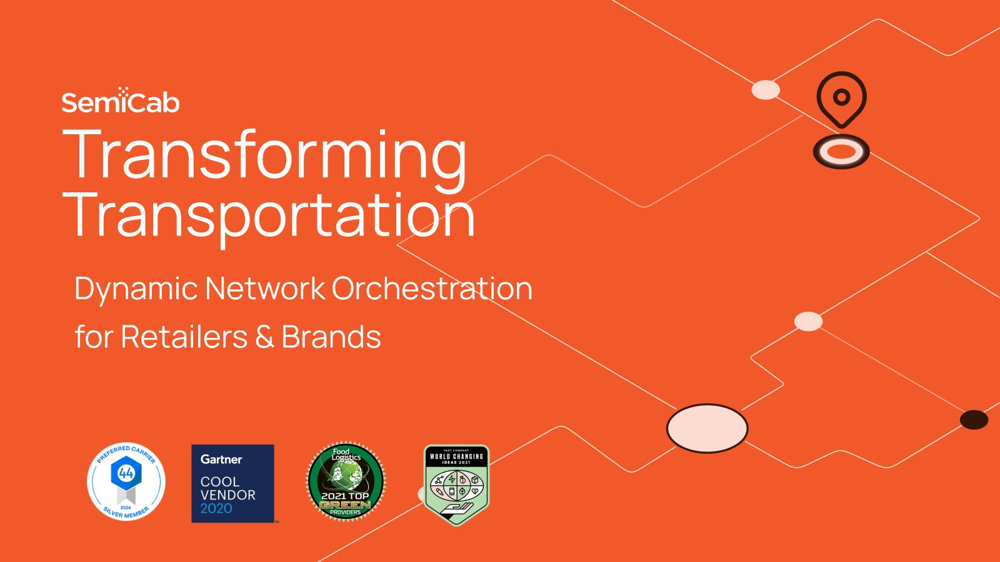
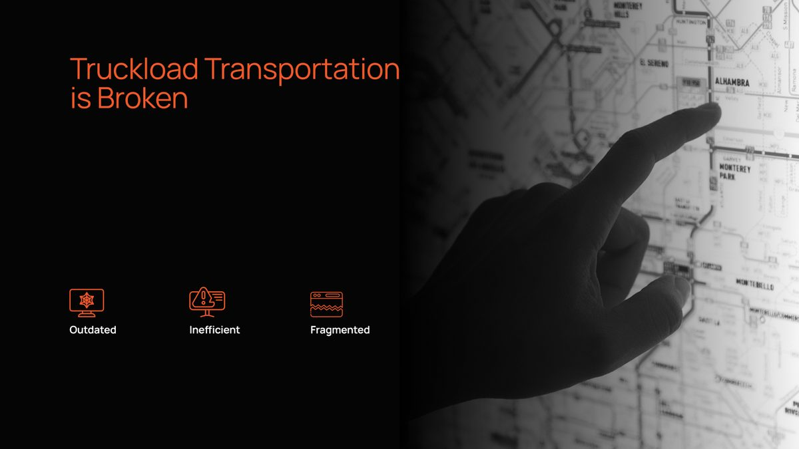
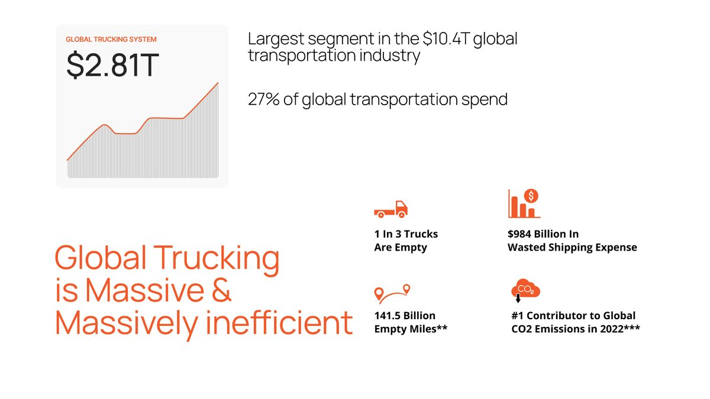
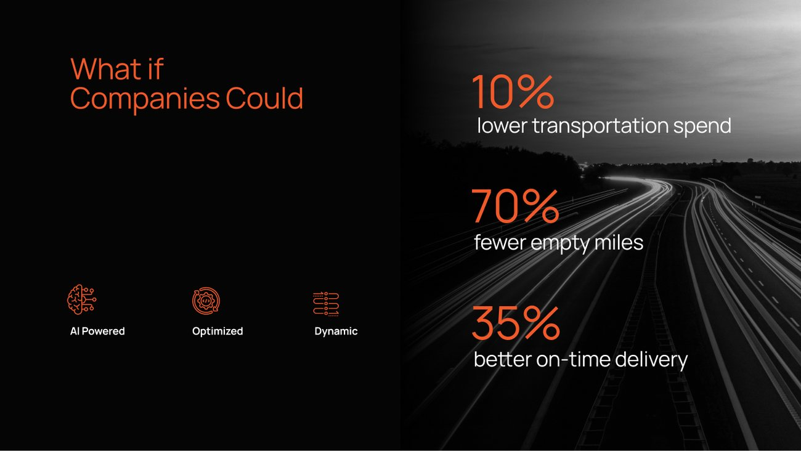
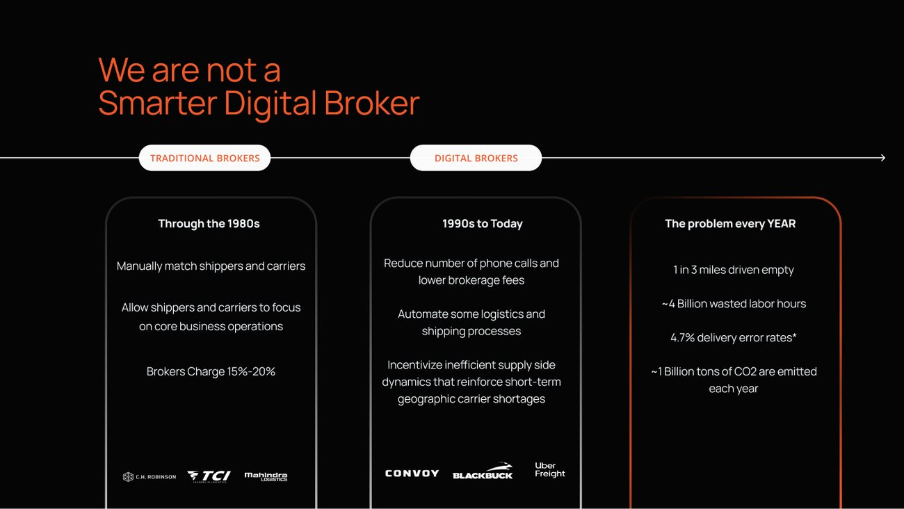
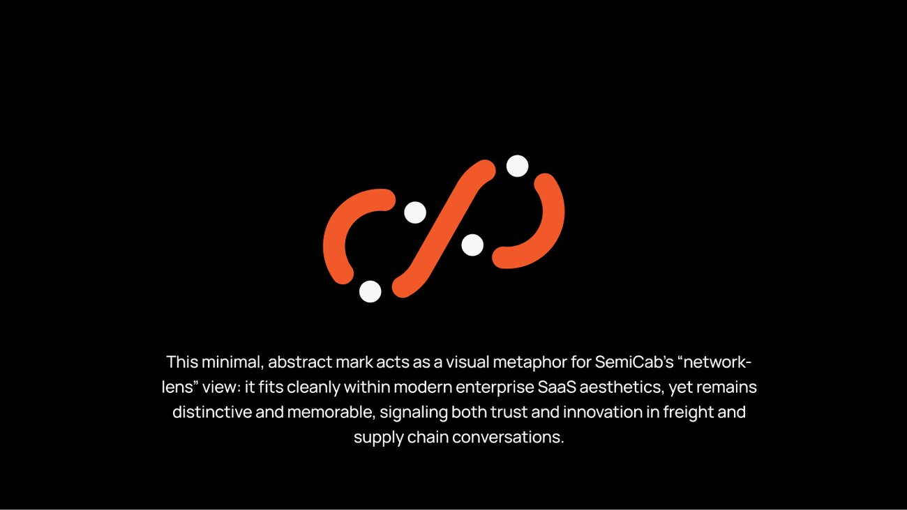
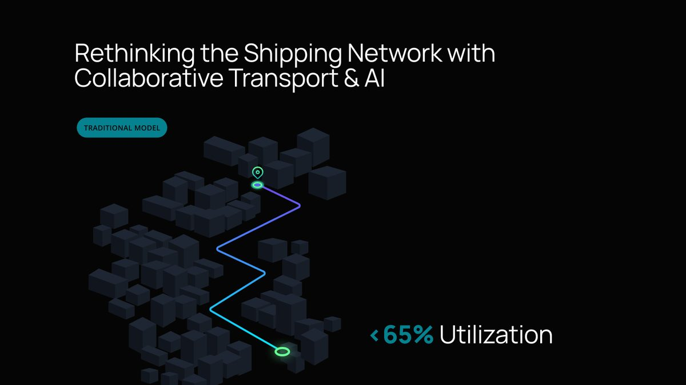
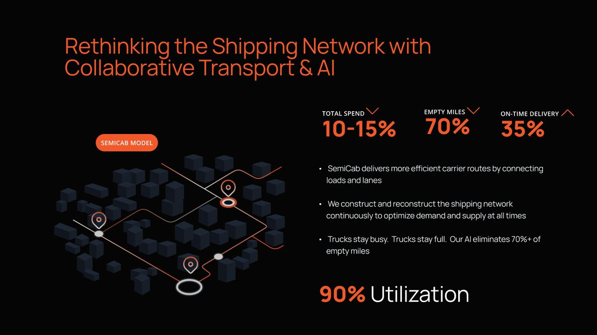
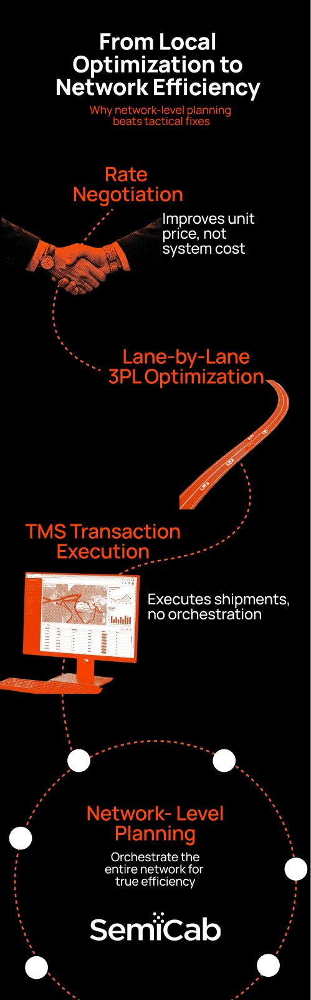

A strategic pitch narrative for a collaborative, AI-driven trucking network.

SemiCab runs a collaborative, AI-driven trucking network. This is the pitch narrative that tells that story — a deck that turns a complex logistics model into something an audience can follow and believe, slide by slide.
Freight is a dense, numbers-heavy subject. A deck about it can drown in statistics. The job was to find the through-line — problem, then proof — and give it a bold, confident visual voice that keeps attention from the first slide to the last.


Early slides size the prize in numbers that land — 10% lower transportation spend, 70% fewer empty miles, 35% better on-time delivery — then sharpen the positioning: SemiCab isn’t a smarter digital broker, it’s a different model entirely.


The deck is anchored by one idea — the “Network Lens.” Orange curved shapes act as dynamic paths and white circles as nodes; flowing compositions suggest the looped, connected network itself. It gives a dense logistics story a single, repeatable visual that balances efficiency with movement.



A full-page infographic carries the core argument on its own: the shift from local optimisation — rate negotiation, lane-by-lane tweaks, TMS execution — up to true network-level planning, drawn as one connected system.

Bold orange on black, confident typography, and data treated as a design element rather than a footnote. Each slide makes one point and hands off to the next, so the argument builds instead of piling up.
A pitch narrative that reads with momentum — a complex, collaborative logistics story made scannable, credible and distinctly SemiCab.